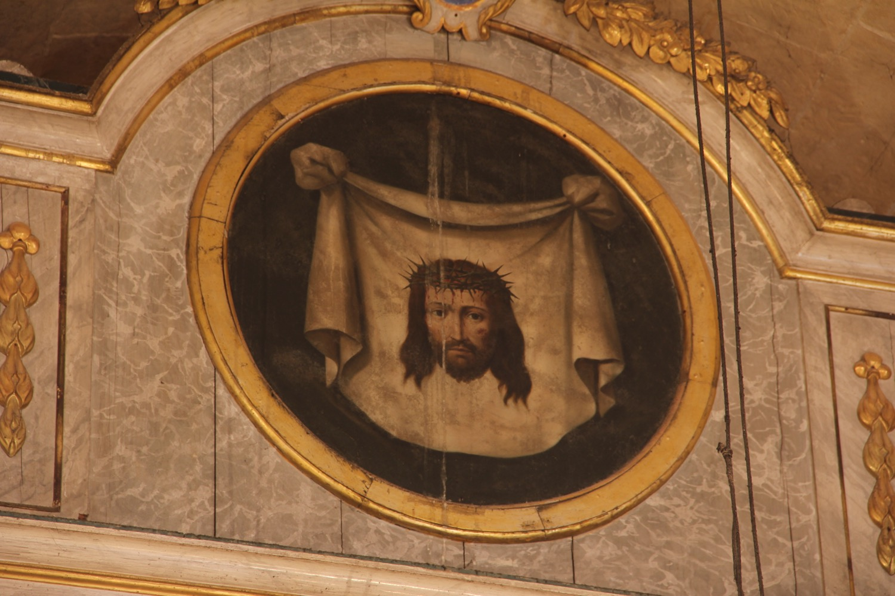

El vel de la Verònica amb la Santa Faç és una de les relíquies més famoses del cristianisme. Segons la tradició, durant el camí de Jesús al Calvari, una dona que més endavant seria coneguda com la Verònica es llevà el vel per eixugar-li el rostre, que quedà miraculosament imprès a la tela. Aquest episodi forma part del Viacrucis, però no apareix als Evangelis canònics. La Santa Faç s’ha convertit en un símbol de compassió davant el sofriment de Crist.